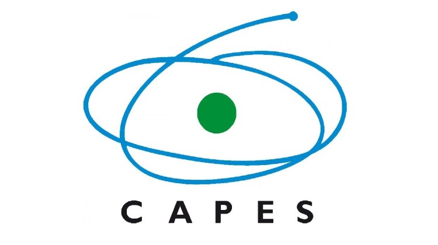

A cidade é produto da coletividade! Independente do conceito, a cidade enquanto construção é consequência de um modo de vida que ali se consolidou, o urbano. Embora a cidade seja esse fenômeno coletivo, é na construção das suas subjetividades que os indivíduos constroem também o espaço ao seu redor. Quem é o seu eu urbano?
Um dos maiores desafios dos planejadores atualmente é conseguir dar voz para os diferentes atores que diuturnamente trabalham para a construção e a transformação desse espaço, como ouvir suas demandas em uma unidade espacial tão diversa? Esta pergunta não é fácil de ser respondida, mas já sabemos que sua solução passa necessariamente pela construção de uma estrutura de governança e gestão urbana que acesse os anseios e as contribuições da população.
As geotecnologias têm papel fundamental nesse processo, por facilitar o acesso e criar uma ponte de interação entre os dados espaciais que caracterizam e descrevem esses espaços em transformação e por permitir a coleta e o feedback de informação em diferentes escalas e camadas!
Desenvolvido por Luiza Fernandes e Max Paulo
Apoio:

Essa estratégia que aqui apresentamos tem esse objetivo de servir como instrumento de simples apropriação para dar voz aos atores sociais nos diferentes cantos da cidade, ao opinar, sugerir, informar sobre elementos do espaço e apresentar sua visão de mundo sobre os objetos no espaço o indivíduo é chamado a construir sua identidade urbana e colaborar com a transformação do espaço em sua volta, entre, fique a vontade, a casa é literalmente sua, contribua, interaja com a ferramenta e deixe sua marca.
Para interagir você pode adicionar elementos no mapa indicando que tipo de intervenção deve ser feita em determinado local. Podendo indicar o que deve ser criado, adequado ou excluido nas categorias Equipamento urbano, Infraestrutura e Análise ambiental.
Para contribuir selecione na caixa a direita "Adicionar Evento" e o tipo de evento que você deseja selecionar. Depois preencha o formulário indicando qual o tipo de intervenção, qual a caracteristica da pessoa que esta preenchendo e o comentário sobre o que deve ser intervido.